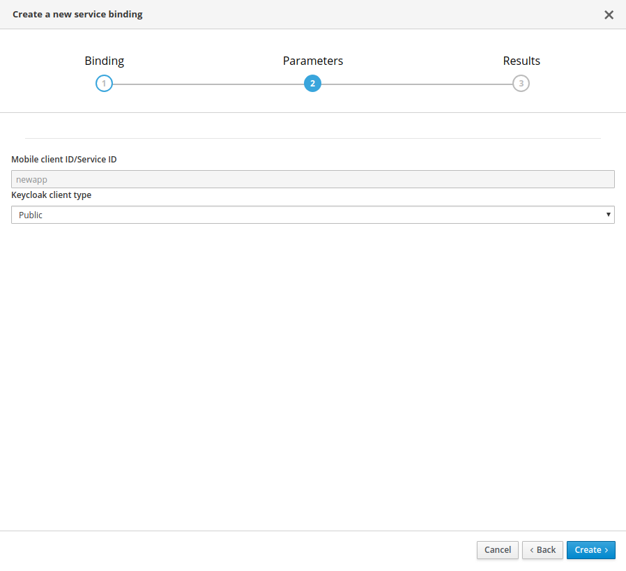

Using the Identity Management Mobile Service
The Identity Management service allows you to add authentication and authorization to your mobile app.
-
Secure your mobile app using the industry standard OpenID Connect protocol
-
Add access control to your app based on user’s group membership
-
Easily implement SSO, multi-factor authentication and Social Login support
-
Back-end support for identity brokering and user federation
Identity Management Service terminology
This section describes terminology that is associated with Identity Management.
- SSO
-
Single Sign On, the ability to share a login between multiple services
- OpenID Connect
-
A standard for providing identity on top of OAuth 2.0
- Keycloak
-
Red Hat’s implementation of SSO and OpenID used as the identity provider
- Client ID
-
Is the client identifier for OpenID Connect requests, a simple alpha-numeric string
- User Attributes
-
Additional properties for user accounts (besides name and email) managed by Keycloak
-
You have provisioned Mobile Developer Console as described in Provisioning Mobile Developer Console.
Setting Up the Identity Management Service
Provisioning the Identity Management Service
This section describes how to set up the IDM Mobile Service.
-
You understand identity management, and have a mobile app you want to protect.
-
You have logged into the OpenShift console and the Mobile Developer Console.
-
Log into the OpenShift console.
-
Create a new project or choose an existing project.
-
Click Add to Project and choose Browse Catalog from the options.
You can filter the catalog items to only show mobile specific items by clicking the Mobile tab.
-
Click Services and choose the service.

-
Follow the wizard for provisioning that service.
If prompted to Create a Binding, choose Do not bind at this time When provisioning an Identity Management service, you are prompted to set the following configuration:
-
Keycloak admin username: Username for Keycloak administration
-
Keycloak admin password: Password for the Keycloak admin user
-
Name of the Keycloak realm: Name of the Keycloak realm. (defaults to current namespace)
A realm manages a set of users, credentials, roles, and groups. A user belongs to and logs into a realm. Realms are isolated from one another and can only manage and authenticate the users that they control. -
Connect to an existing shared service: Select if you want to use an existing service and you have the URL and credentials to use that service.
-
URL of the shared service: Enter a value if you want to use an existing shared service.
-
Once the wizard steps are completed, navigate to the Project Overview in OpenShift to see the newly provisioned service. Provisioning a service may take some time.
Binding a Mobile App with the Identity Management Service
To use mobile services, you must represent your mobile app in Mobile Developer Console, and that app must be associated with the mobile service. This association is called binding and it is necessary for your mobile app to use that service.
This section describes how to set up the Identity Management service.
-
You have created a Mobile App.
To bind a Mobile App with a mobile service:
-
Launch Mobile Developer Console.
-
Click on the Mobile App on the Overview screen.
-
Navigate to Mobile Services tab.

It is possible to bind a Mobile App with a mobile service in the OpenShift console, however such bindings are not valid for the purposes of this procedure. -
Click Bind to App for .
-
Fill out the binding parameters required by the Service.
Use Publicwhen binding a Mobile App to a . When binding mobile services to each other, useBearer.
The service will now be expandable, details about the service can be viewed.

Configuring the Identity Management Service
This section guides you through configuring the redirect url and web origin for a client in Keycloak. This is required to enable OpenID authentication. For an explanation of these terms, see Keycloak Documentation.
-
An understanding of OpenID
-
Log into the Mobile Developer Console and navigate to the Mobile App screen.
-
Select the Mobile Services tab.
-
If a binding to the Identity Management service is in progress, a spinning icon is displayed to the right of the Identity Management entry. Wait for the binding process to complete.
-
If the Keycloak Realm URL URL is not visible, expand the Identity Management Service by clicking the > icon.
-
Click on the Keycloak Realm URL link to open the Keycloak Administration Console.
-
Log in to the Administration console using the credentials you specified when Provisioning the service (defaults to admin/admin).
-
Select
Clientsfrom the left navigation menu. -
Select your client from the list of clients. The name of your client is derived from the name of the Mobile App, the name of the mobile development platform and the client type, for example
myapp-android-public. -
Add an additional entry to Valid Redirect URIs.
It is recommended to use the package name of the Android app as the schema of the redirect url to avoid conflicts. (e.g.
com.aerogear.androidshowcase)It is recommended to use the Bundle Identifier of the iOS app as the schema of the redirect url. (e.g.
org.aerogear.ios-showcase-template)Set the additional value to
http://localhost*.Depending on the platform, set the redirect URL as described in either the Android or the iOS tab.
-
Add an additional entry to Web Origins.
Use the package name of the Android app to avoid conflicts. (e.g.
com.aerogear.androidshowcase)Use the Bundle Identifier of the iOS app. (e.g.
org.aerogear.ios-showcase-template)Set additional value to
http://localhost*.Depending on the target platform, set the additional value as described in either the Android or the iOS tab.
-
Save your changes.
-
Creating a new user account as described in Creating a New User.
-
Set up credentials for the new user as described in User Credentials.
Configuring your development environment for the Identity Management Service
Downloading the Configuration File
The mobile-services.json file provides the information for your mobile app to communicate with services.
After you change any configuration in the Mobile Developer Console, it is important to update that file in your IDE.
-
The configuration of your Mobile App in Mobile Developer Console is up-to-date.
-
You have set up your mobile app development environment.
-
Open your Mobile App in Mobile Developer Console.
-
Copy the
mobile-services.jsonconfiguration to your clipboard. -
Save the contents of the clipboard to a new file called
mobile-services.json.The mobile-services.jsonfile is the link between your provisioned services on OpenShift and the mobile app you are developing. This file provides all required configuration to initialise the various SDKs and get them hooked up/connected to the back-end services. -
Move mobile-services.json to the following location in your application project:
Setting up the Identity Management Service SDK
This section helps you to set up the Identity Management service SDK in your App. It describes how to set up and initialize the Identity Management service SDK.
-
Your local
mobile-services.jsonfile is up-to-date.
-
Import the libraries.
-
Add the following dependency in your app’s build.gradle:
dependencies { implementation "org.aerogear:android-auth:1.0.0" } -
To prevent build errors, add the following in your app’s build.gradle:
compileOptions { sourceCompatibility 1.8 targetCompatibility 1.8 }
-
Add the dependency to your Podfile:
target '[TARGET NAME]' do pod 'AGSAuth', '1.0.0' end -
Update the dependencies:
$ pod install -
Import and instantiate
AGSAuthto start using the SDK:import AGSAuth auth = AGSAuth()
-
Add the following code to
index.htmllocated insrc/:<meta http-equiv="Content-Security-Policy" content="default-src * file: 'self' data: gap: https://ssl.gstatic.com 'unsafe-eval'; style-src 'self' 'unsafe-inline'; media-src *; img-src 'self' data: content:;"> -
Install the AeroGear Auth package from NPM:
$ npm install @aerogear/auth -
Install cordova-plugin-inappbrowser:
$ cordova plugin add cordova-plugin-inappbrowserUse a JavaScript bundler, for example,
browserifyso that you can use node modules in Cordova. AeroGear recommends using therequirestatement rather thanimportfor the the @aerogear/auth module as shown below:
-
Install NuGet.
-
Install the AeroGear Core package:
dotnet add package AeroGear.Mobile.Core --version 1.0.0 -
For Android run:
dotnet add package AeroGear.Mobile.Core.Platform.Android --version 1.0.0 dotnet add package AeroGear.Mobile.Auth.Platform.Android --version 1.0.0 -
For iOS run:
dotnet add package AeroGear.Mobile.Core.Platform.iOS --version 1.0.0 dotnet add package AeroGear.Mobile.Auth.Platform.iOS --version 1.0.0
-
-
Initialize the SDK.
-
Specify the redirect URL. It is recommended to use the package name of your app.
AuthServiceConfiguration authServiceConfig = new AuthServiceConfiguration .AuthConfigurationBuilder() .withRedirectUri("org.aerogear.mobile.example:/callback") .build(); -
Create the auth service:
AuthService authService = new AuthService(authServiceConfig);
Set your custom configuration to the auth service instance, making sure the redirect URL matches the App’s Bundle Id.
// create the authentication config let authenticationConfig = AuthenticationConfig(redirectURL: "org.aerogear.mobile.example:/callback") try! AgsAuth.instance.configure(authConfig: authenticationConfig, useExternalUserAgent: false)-
Import and initialize Auth.
const Auth = require('@aerogear/auth').Auth; const authService = new Auth(app.config); const initOptions = { onLoad: "login-required" }; authService.init(initOptions) .then(() => { // successful init & authentication }) .catch((err) => { // initialization error });
You can pass
login-requiredorcheck-ssoto the init function.login-requiredwill authenticate the client if the user is logged in to Keycloak or display the login page if not.check-ssowill only authenticate the client if the user is already logged in. If the user is not logged in the browser will be redirected back to the application and remain unauthenticated. By default, thecheck-ssooption is used.Initialization also enables authentication. To use self-signed certificates with your Cordova application, complete the following instructions here.
-
Create an intent filter for the
net.openid.appauth.RedirectUriReceiverActivityactivity. This step is required for Xamarin Android and allows the login browser to redirect back to your App. Add this to yourAndroidManifest.xml:<activity android:name="net.openid.appauth.RedirectUriReceiverActivity" android:exported="true" android:icon="@mipmap/ic_launcher" android:roundIcon="@mipmap/ic_launcher_round"> <intent-filter> <action android:name="android.intent.action.VIEW" /> <category android:name="android.intent.category.DEFAULT" /> <category android:name="android.intent.category.BROWSABLE" /> <data android:scheme="org.aerogear.mobile.example" /> </intent-filter> </activity> -
Initialize the Auth module
-
For an Android app (MainActivity.cs):
var app = new App(); MobileCoreAndroid.Init(app.GetType().Assembly,ApplicationContext); var authService = AuthService.InitializeService(); var authConfig = AuthenticationConfig.Builder.RedirectUri("org.aerogear.mobile.example:/callback").Build(); authService.Configure(authConfig);For Android an Intent filter should be configured with the callback URL specified in AuthenticateOptions in the App’s AndroidManifest.xml. See the example app. -
For an iOS app (FinishedLaunching method of AppDelegate.cs):
var app = new App(); MobileCore core = MobileCoreIOS.Init(app.GetType().Assembly); var authService = AuthService.InitializeService(); var authConfig = AuthenticationConfig.Builder.RedirectUri("org.aerogear.mobile.example:/callback").Build(); authService.Configure(authConfig);
-
-
Adding User Authentication to your Mobile App
Implementing authentication
-
The
mobile-services.jsonfile is up-to-date in your development environment.
To implement authentication using the Aerogear SDK:
-
Provide an implementation of
Callbackwhich is defined in the Aerogear SDK and used to handle asynchronous results:Callback authCallback = new Callback<UserPrincipal>() { @Override public void onSuccess(UserPrincipal principal) { ... } @Override public void onError(Throwable error) { ... } }; -
Use the
loginmethod to hand over to the login browser:// Build the options object and start the authentication flow DefaultAuthenticateOptions options = new DefaultAuthenticateOptions(myActivity, LOGIN_RESULT_CODE); authService.login(options, authCallback); -
Override
onActivityResultto handle the result from the browser. It’s important to pass the intent back to the Auth service:@Override public void onActivityResult(int requestCode, int resultCode, Intent data) { if (requestCode == LOGIN_RESULT_CODE) { authService.handleAuthResult(data); } }This handler should always invoke handleAuthResult, providing theIntent. This will exchange the temporary tokens returned fromloginfor long-lived tokens and will provide aUserPrincipalwhich can be used to access a users details. If this is not invoked you will not have access to theUserPrincipal. -
The callback provided to
loginwill be invoked.
-
Use the
loginmethod to hand over to the login browser:AgsAuth.instance.login(presentingViewController: self, onCompleted: onLoginComplete) func onLoginComplete(user: User?, err: Error?) { if let error = err { return } let currentUser = user } -
Allow your application to handle the redirect in
AppDelegate:func application(_ app: UIApplication, open url: URL, options: [UIApplicationOpenURLOptionsKey: Any] = [:]) -> Bool { do { return try AgsAuth.instance.resumeAuth(url: url as URL) } catch AgsAuth.Errors.serviceNotConfigured { print("AeroGear auth service is not configured") } catch { fatalError("Unexpected error: \(error).") } return false }
Authentication is enabled during initialization as described in the section Setting up the Identity Management Service SDK. To manually redirect to the login screen, use:
authService.login().then(() => {
// Login success
}).catch(() => {
// Login error
});;-
Use the
Authenticatemethod to hand over to the login browser:IAuthService authService = MobileCore.Instance.GetService<IAuthService>(); var authOptions = DependencyService.Get<IAuthenticateOptionsProvider>().GetOptions(); var user = await authService.Authenticate(authOptions);
Refreshing the authentication token
When a user is authenticated, an access token and a refresh token are generated by the authentication server. See the Keycloak documentation for information about configuring the lifespan of these tokens. If the refresh token is still valid, the authentication token can be refreshed even if the authentication token has expired.
-
A working mobile app that uses authentication with the Identity Management service.
To automatically refresh the authenticate token :
Retrieve the current user and refresh the access token when possible and required:
UserPrincipal currentUser = authService.currentUser(true);Retrieve the current user and refresh the access token when possible and required:
do {
try AgsAuth.instance.currentUser(autoRefresh: true) { (currentUser, error) in
// If error is nil, currentUser is now refreshed
}
} catch {
// An error has occurred trying to reach the authentication server
}Retrieve the keycloak adapter object and refresh the access token, when possible and required:
authService.extract().updateToken(30).then(() => {
// Token has been refreshed
});More information about the keycloak javascript adapter can be found here
Retrieve the current user and refresh, if needed and still possible, its access token:
var authService = MobileCore.Instance.GetService<IAuthService>();
var currentUser = await authService.CurrentUser(true);Adding Log Out Option to your Mobile App
The following section describes how to perform a logout.
| To perform backchannel or federated logouts, you must enable the Backchannel Logout option for the federated identity provider. More information is available in the Keycloak documentation under OICD Identity Providers. |
-
A working mobile app that uses authentication with the Identity Management service.
To enable users of the mobile app log out from the service.
-
Retrieve the current user:
UserPrincipal currentUser = authService.currentUser(); -
Implement
Callbackand calllogout:
authService.logout(currentUser, new Callback<UserPrincipal>() {
@Override
public void onSuccess() {
// User Logged Out Successfully and local Auth tokens were Deleted
}
@Override
public void onError(Throwable error) {
// An error occurred during logout
}
});
-
Implement the logout callback:
func onLogoutComplete(_: Error?) { // User Logged Out Successfully and local Auth tokens were Deleted ... } -
Call
logoutand pass the callback:do { try AgsAuth.instance.logout(onCompleted: self.onLogoutComplete) } catch { fatalError("Error logging out: \(error).") }
Invoke the logout function:
authService.logout().then(() => {
// User Logged Out Successfully and local Auth tokens were Deleted
});To logout invoke the Logout method:
var authService = MobileCore.Instance.GetService<IAuthService>();
var result = await authService.Logout(authService.CurrentUser());Authenticating with a back end service
In a typical scenario, you not only want the user to authenticate on the mobile app, you also want that user to authenticate with a back end service.
-
A working mobile app that uses authentication with the Identity Management service.
-
Add an additional token:
Authorization: BEARER Yourtoken -
Add code to authenticate with a back end service:
-
Get the
AuthHeaderProviderinstance provided by the Aerogear SDK:authService.getAuthHeaderProvider() -
Plug it into your networking layer. When using the
okhttplibrary, this can be added to the list of request interceptors to automatically supply the required tokens:MobileCore.getInstance() .getHttpLayer() .requestHeaderInterceptor() .add(authService.getAuthHeaderProvider());
-
Get the
AuthHeaderProviderinstance provided by the Aerogear SDK:authService.getAuthHeaderProvider() -
Plug it into your networking layer.
The AeroGear Cordova SDK doesn’t provide an HTTP layer, therefore it cannot provide an Auth Header Provider. You must manually attach the
Bearerheader to your HTTP requests.req.setRequestHeader('Accept', 'application/json'); req.setRequestHeader('Authorization', 'Bearer ' + authService.extract().token);-
Get the
AuthHeaderProviderinstance provided by the Aerogear SDK:var authHeaderProvider = authService.AuthHeaderProvider; -
Plug it into your networking layer.----
-
Adding Access Control to your Mobile App
Once a UserPrincipal has been retrieved, the roles of the user can be listed and checked.
This can be used to perform client side access control, such as hiding UI components related to actions the user doesn’t have permissions to perform.
Roles are divided into two types. Resource roles which belong to the client the user has authenticated against, and Realm roles which belong to the realm the client is in.
-
A working mobile app that uses authentication with the Identity Management service.
To add Access Control:
-
Retrieve the authenticated user:
UserPrincipal currentUser = authService.currentUser(); -
Use
hasRealmRoleandhasResourceRoleto check for roles:boolean hasAdminPermissions = currentUser.hasRealmRole("user_admin"); boolean isModerator = currentUser.hasResourceRole("my_resource", "user_moderator");
-
Retrieve the authenticated user:
let currentUser = try AgsAuth.instance.currentUser() -
The user roles are available on the authenticated user:
let clientRoles = currentUser.clientRoles let realmRoles = currentUser.realmRoles -
Use
hasRealmRoleandhasClientRoleto check for roles:let hasAdminRole = currentUser.hasRealmRole("admin") let hasModeratorRole = currentUser.hasClientRole(client: "my_client", role: "moderator")
Get the realm roles from the auth service:
const realmRoles = authService.getRealmRoles();
No function to retrieve the resource roles is currently exported but you can use extract to get a handle to the underlying keycloak-js instance to retrieve the roles from there. Have a look at their documentation here.
|
-
Retrieve the authenticated user:
// auth service is already initialised var user = MobileCore.Instance.GetService<IAuthService>().CurrentUser(); -
Use
getRolesto retrieve all roles from the user:// auth service is already initialised var roles = user.getRoles(); -
Use
HasRealmRoleandHasResourceRoleto check for roles:bool isAdmin = user.HasRealmRole("user_admin"); bool isModerator = user.HasResourceRole("my_resource", "user_moderator");
Adding SSO to your Mobile App
Using SSO with the Device Browser
The AeroGear mobile SDK uses OpenID Connect Authorization Code Flow to implement SSO using a mobile device browser.
-
You have completed all steps in Adding Access Control to your Mobile App.
-
Two Mobile Apps bound to the Identity Management service.
-
Two Mobile Apps built and running on the same device that are using the AeroGear SDK Auth module.
In the following procedure, the two apps are named Email App and Messaging App. Substitute the appropriate names for your SSO scenario.
-
Ensure the "Remember Me" option in Keycloak is turned on. In the admin UI click on Realm Settings section on the left hand side, and then click on Login. Turn on Remember Me.
-
Now that your two apps and Keycloak clients are setup, sign into the Email App with the user you have previously created. You should be redirected to your device browser which should have loaded the Keycloak login page.
-
Next, enter in your credentials, make sure check the Remember Me option and login. You have now been authenticated on the Email App via the browser.
-
Finally, try sign into the Messaging App and you should be automatically logged in as you have been previously authenticated in the Email App via the same browser.
With iOS 11 and later, Apple has introduced SFAuthenticationSession for apps to perform SSO, instead of using the system Safari browser and there are known issues with this new feature. Sometimes, the user may have to enter their credentials again, even if they have logged in previously in another app.
Monitoring the Identity Management Service
After the Mobile Metrics Service (includes Grafana for visualization and the Prometheus monitoring system) and Identity Management Service are provisioned, you should be able to see the "Keycloak Metrics" in the list of available dashboards.
-
The Mobile Metrics Service and Identity Management Service must be provisioned in the same OpenShift project to access data.
-
Navigate to Grafana.
-
Select Keycloak Metrics.
Additional resources
Dashboard panel descriptions
The Keycloak dashboard consists of several panels which give you an overview of the specific events, such as the number of registered users, memory usage etc.
Below you will find a detailed description of each panel and its values.
Singlestat panels show you the main summary of a single data series.
-
Total Registrations: Total number of registered (non-admin) users. This number comprises all successful registrations made via various providers, e.g. Keycloak, Github, Facebook etc.
-
Total Logins: Total number of successful logins (only non-admin users) over all providers.
-
Total Login Errors: Total number of failed login attempts.
-
Current Memory: The amount of memory currently used by the Identity Management Service
Used to show how certain values change over time, e.g. the number of successful logins.
-
Logins: Overview of the successful logins over time
-
Login Errors: Overview of the failed login attempts over time
-
Memory Usage: The values in this graph represents the following:
-
Used: The amount of memory currently used by the Identity Management Service
-
Commited: The amount of memory that is guaranteed to be available for use (by JVM)
-
Max: The maximum amount of memory that can be used for memory management
-
Used to show the distribution of data, e.g. the number of logins per identity provider.
-
Logins Per Provider: Overview of the successful (non-admin) user logins per provider
-
Registrations Per Provider: Overview of the successful (non-admin) user registrations per provider.
Additional resources
-
For more information about OpenID, see the OpenID Foundation website.
-
See the Keycloak documentation for more info.